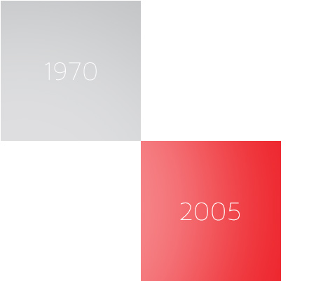

Research
Ryden rediscovered
From the 1970s model of an undeveloped and untried dual carbon battery came Ryden. The fledgling development was dropped when research determined the battery would not be able to hold enough energy for commercial use.
For almost forty years the design was locked away. This was until one day, almost ten years ago when Professor Tatsumi Ishihara began revisiting its flaws and applying new chemistries.
+COMBINING FORTY YEARS OF DEVELOPMENT AND LATEST CHEMISTRIES